Era um console simples em que apresentava jogos que aparentavam mais serem variações do classico Pong.
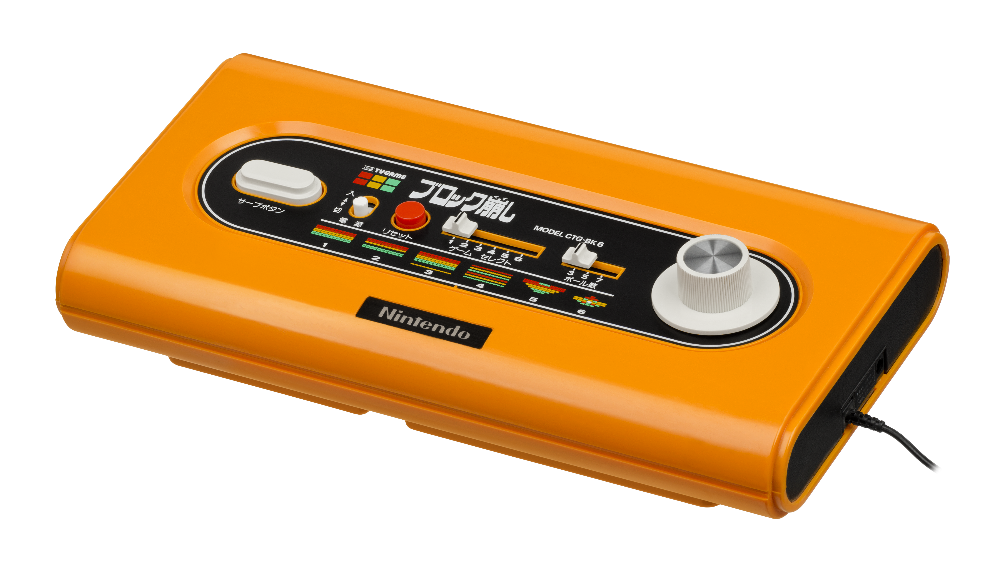
O game & watch foi "o primeiro console portátil da Nintendo" em que ele focava em ter uma funcionalidade
de servir com relogio e um console para você se divertir.
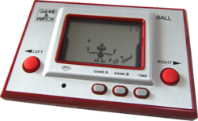
O Nintendo Entertainment System, também conhecido como nintendinho foi o console que revolucionou a industria
de jogos, e salvou o mercado de video games após a crise de 1983. Ele é um console doméstico estilo 8 bits.
que trouxe varias franquias icônicas como super mario, the legend of zelda, mega man e metroid.
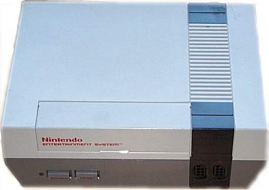
O game boy foi o console portátil que revolucionou a industria de jogos portáteis, que se utilizava de uma
tela monocromática e cartuchos de jogos, que permitiam que você jogasse em qualquer lugar, alguns dos seus
jogos mais icônicos são tetris, pokemon e kirby.
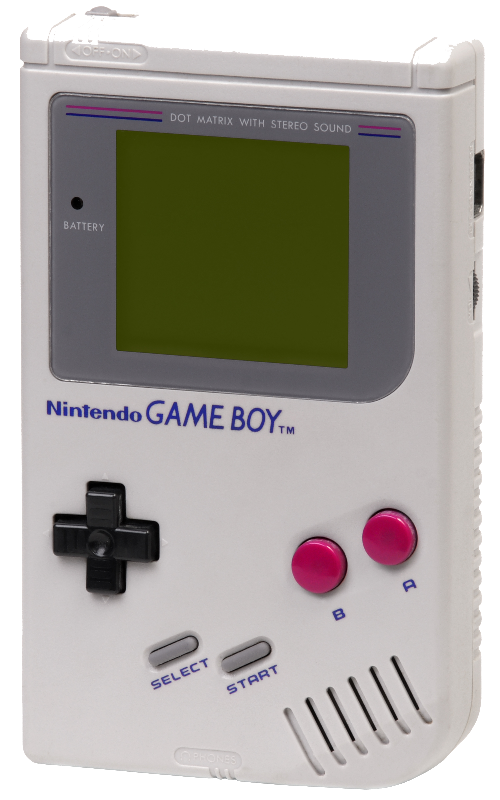
O Super Nintendo Entertainment System, também conhecido como super nintendo, foi a continução do nintendinho
só que agora com 16 bits trouxe mais grandes sucessos a empresa como donkey kong country e outros envolvendo
mario como o super mario world, super mario kart e yoshi's island.
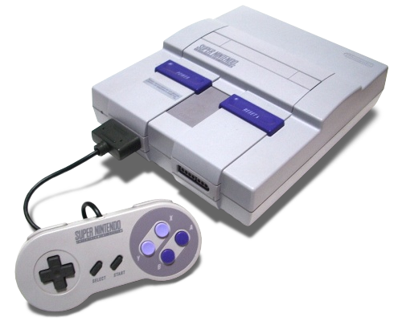
O Virtual Boy foi um console que utilizava a tecnologia de realidade virtual, mas acabou sendo o maior fracasso
da nintendo devido a sua tela monocromática, a falta de jogos e o alto custo, que fez com que ele fosse descontinuado
rapidamente.
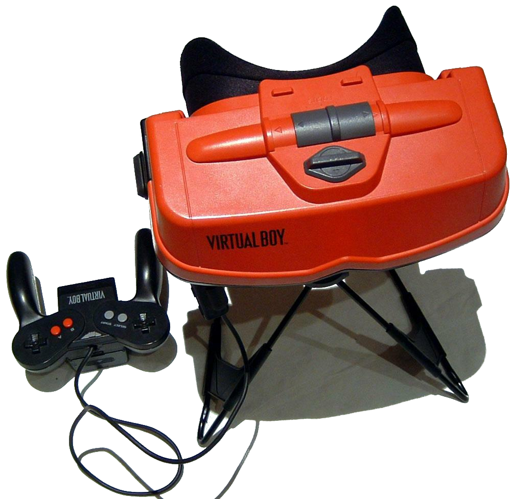
O nintendo 64 foi um console que foi marcado pelos seus jogos em 3D com 64 bits, porém ainda se utilizava de cartuchos que
causava um espaço de armazenamento limitado comparado com os cd's. Além disso ficou muito popular por seu controle com seu
famoso analogico central. E claro grandes jogos como mario 64, zelda ocarina of time e mario party.
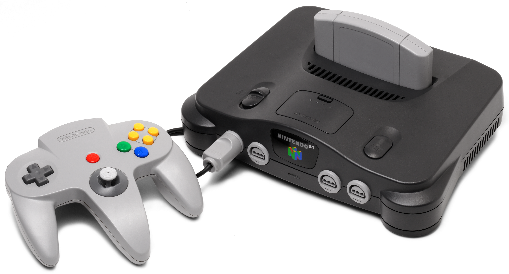
Ambos foram apenas atualizações do Game boy original, trazendo melhorias na tela e no desempenho. Porêm ficaram extremamente
pelos seus jogos de pokemon.
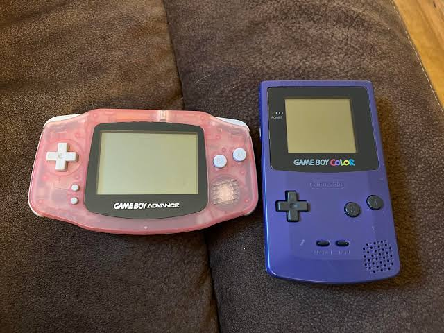
O nintendo game cube foi um console lançado em 2001. Seus principais destaques eram o controle ergonimico e seu visual compacto.
Porêm ele acabou sendo atropelado pela concorrencia com o lançamento do playstation 2. Obs: marcado pela sua viciante animação
ao ligar o console.
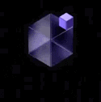
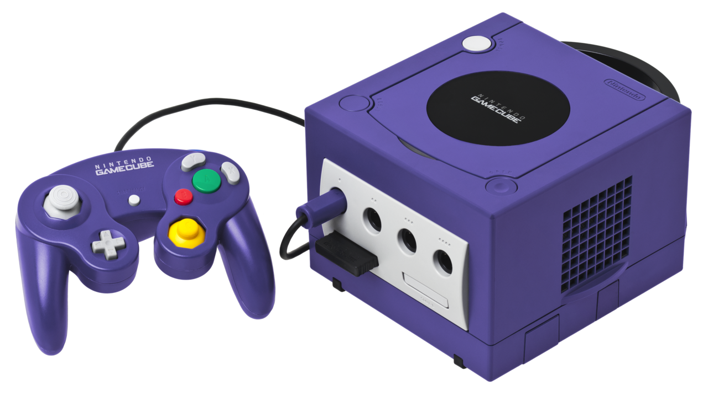
O nintendo DS foi um console portátil lançado em 2004. Seu principal destaque era a tela dual presente no console em que dava um
aspecto de jogabilidade único.

O nintendo wii foi um console doméstico lançado em 2006. Seu principal destaque era o controle com sensor de movimento, que permitia
uma jogabilidade mais imersiva e divertida para toda a família. Alguns dos seus jogos mais icônicos são wii sports e super mario galaxy
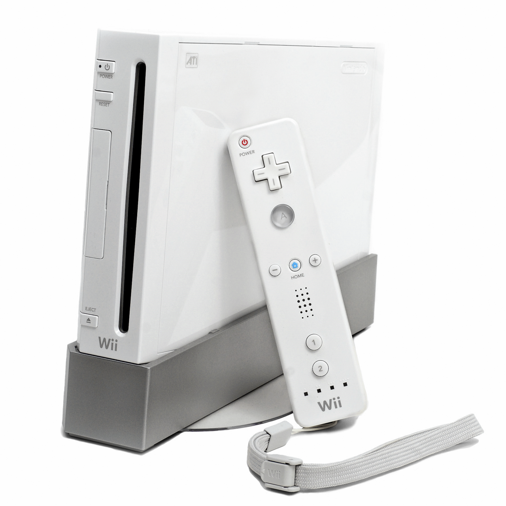
o Nintendo 3DS foi um dos consoles portáteis mais populares da Nintendo, destacando-se pela tecnologia 3D, variedade de jogos e possibilidade
de jogar em qualquer lugar.
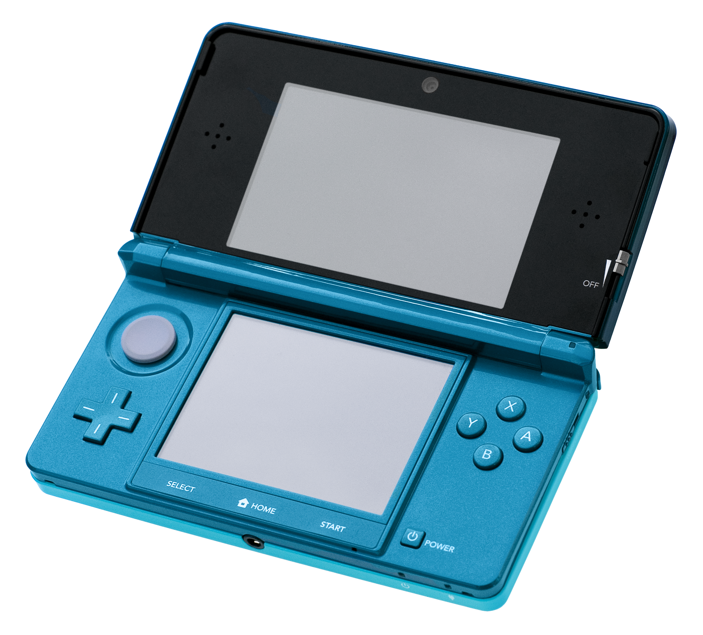
O Nintendo Wii U é um console de videogame desenvolvido pela Nintendo e lançado em 2012. Seu principal diferencial é o GamePad, um controle com
tela sensível ao toque que permite jogar de maneiras diferentes, utilizando duas telas ao mesmo tempo. Porém ele recebeu pouca atração pela concorrência.
Obs: destaque pessoal ao jogo splatoon.
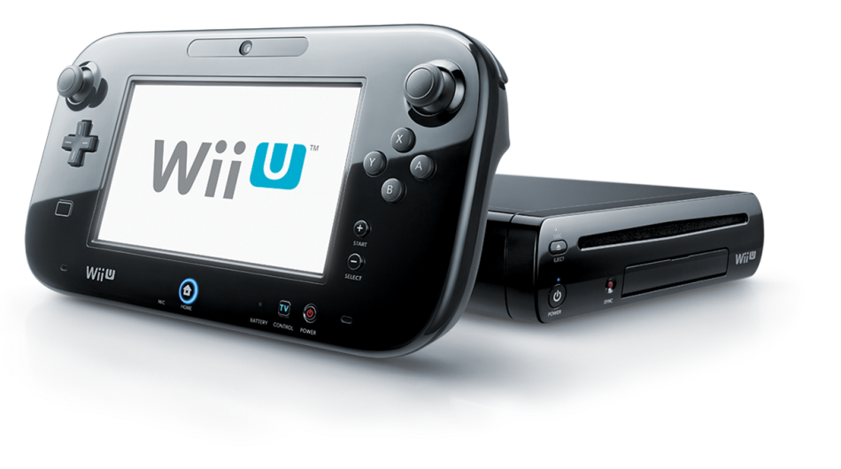
O Nintendo Switch é um console desenvolvido pela Nintendo e lançado em 2017. Seu principal diferencial é ser um console híbrido, podendo ser utilizado tanto
como videogame de mesa, conectado à televisão, quanto como console portátil. Ele possui controles destacáveis chamados Joy-Con, que permitem diferentes formas
de jogar, incluindo partidas multiplayer. Entre seus jogos mais famosos estão The Legend of Zelda: Breath of the Wild, Super Mario Odyssey, Mario Kart 8 Deluxe
e Animal Crossing: New Horizons. Ele virou o maior sucesso da empresa sendo o segundo console mais vendido na história.
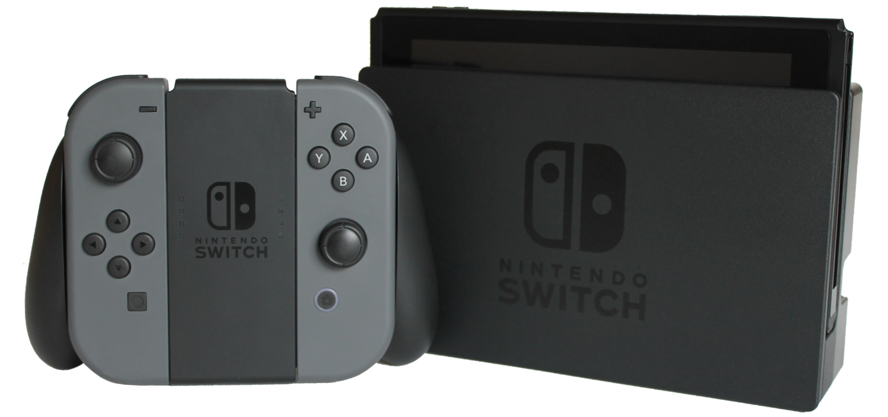
O Nintendo Switch 2 é o sucessor do Nintendo Switch, lançado em 5 de junho de 2025. Ele mantém o conceito de console híbrido, permitindo jogar tanto na televisão
quanto no modo portátil, mas apresenta melhorias significativas em desempenho, gráficos e qualidade de imagem. Ele acabou batendo o recorde de console mais vendido
no dia do lançamento.
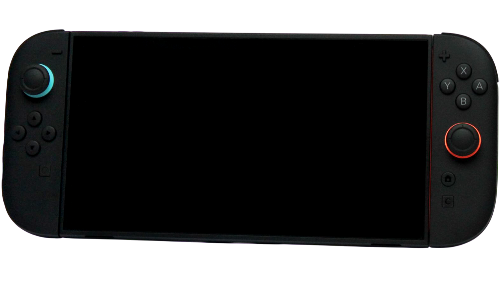
Voltar